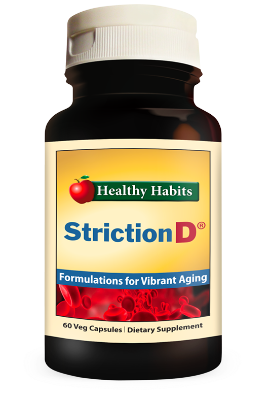

Breaking News:
Has Effortless Diabetes Solution Finally Been Discovered?
57-Year-Old Teacher Balances Blood Sugar Levels in 12 Weeks WITHOUT Medication Using "Advanced Blood Health Protocol"
By Richard Mason
 Updated
Updated
We all know that managing blood sugar is not easy, but what if it was possible to stabilize your blood sugar levels without having to give up the foods you love?
Well, there’s groundbreaking news of a new blood health approach that is creating a stir in the health community, promising just that… WITHOUT medication.
Whether you’re facing serious blood sugar concerns or just trying to maintain healthy levels… few things are as concerning as the prospect of lifelong medication.
It’s just too daunting to overhaul your entire diet and daily routine, and the thought of medication dependency is disheartening.
Sure, you might start with determined efforts to adjust your diet and lifestyle for a few weeks or maybe even a couple of months, but life has a way of presenting temptations or stressors, and BAM!
Suddenly, you find yourself backsliding, and your blood sugar levels are right back where they started, if not worse.
A New Breakthrough Blood Sugar Formula Promises An Easy Way To Manage Your Levels…
Without Sacrificing The Foods You Love...
Be aware that there is a limited quantity of StrictionD's Introductory Kits, and they are available today, exclusively to our readers.
 Get Your Discount TodayDoes this seem unbelievable?
57-year-old teacher Robert Johnson is living proof that it's real.
Here's Robert's Story In His Own Words:
-
Like many my age, I was facing rising blood sugar levels, and despite trying everything recommended to manage it, I never saw lasting results.►
-
Each attempt to control my diet or my medication seemed only to have a temporary effect.►
-
It was incredibly discouraging, to the point where I was about to resign myself to a life of restrictions and potential health complications.►
-
But then, about 6 months ago, my doctor gave me a wake-up call.►
-
My blood pressure was through the roof, and my blood sugar levels were consistently high.►
-
With an A1C level dangerously over the recommended range, I was staring down the barrel of serious health risks like heart disease or stroke.►
-
The possibility of daily insulin injections loomed over me as a stark reality to control my escalating blood sugar levels.►
-
Desperate for a real solution, I scoured the internet for any alternative that could help me.►
That’s when I stumbled upon an inspiring story that would change everything.
It was about another person in their late fifties named Alex Tremblay who had transformed their health in just 9 WEEKS with what was being praised as the “Advanced Blood Health Protocol”. And here are Alex Tremblay’s astonishing before and after health reports, showcasing an incredible turnaround in blood sugar and pressure levels!
I read about how Alex had always been proactive about personal wellness...
… but despite efforts to maintain a healthy lifestyle, Alex found his blood sugar and blood pressure levels gradually creeping up—a trend he was desperate to reverse.
Then, a turning point came for Alex when he was selected to participate in a clinical trial for a new blood health management system, spearheaded by a team of medical professionals who specialized in metabolic health.
This team had pinpointed a significant barrier to maintaining healthy blood sugar levels, a condition they termed "Glucose Resistance."
Be aware that there is a limited quantity of StrictionD's Introductory Kits, and they are available today, exclusively to our readers.
Get Your Discount TodayWhat Is Glucose Resistance and How Does It Affect Blood Sugar Management?
Dr. S, a leading figure in this innovative health research, explains:
"Glucose Resistance is the body’s diminishing response to insulin due to chronic exposure to high glucose levels, often worsened by sedentary behavior. It results in a 'Plateau Effect,' where, despite one’s best efforts, improvements in blood sugar and pressure levels stagnate. This plateau can lead to a cycle of frustration and despair."
Dr. T, working alongside Dr. S, adds:
"Our clinical trials have demonstrated that addressing Glucose Resistance with a natural, potent formula can significantly enhance insulin response and blood pressure regulation, enabling individuals to manage their blood sugar effectively throughout the day, regardless of lifestyle patterns.
The real concern was avoiding overcorrection and the risk of hypoglycemia, which is equally hazardous.
Our breakthrough is the '3-Stage Blood Health Protocol,' a system designed for efficacy and safety, supporting long-term health maintenance."
After the trial, where participants like Alex saw impressive improvements in managing their blood sugar and pressure, this system is now being released as...
Be aware that there is a limited quantity of StrictionD's Introductory Kits, and they are available today, exclusively to our readers.
Get Your Discount TodayThe Pioneering StrictionD Method For Optimal Blood Sugar and Pressure Control!
StrictionD emerges as a beacon of hope, with its dual-action formula that addresses the "Glucose Resistance" challenge and maintains blood sugar levels around the clock...
…EVEN WHILE YOU SLEEP…
…reinforced by its '3-Stage Blood Health Protocol' which neutralizes the "Plateau Effect" by constantly adapting to the body’s needs.
StrictionD is not just a supplement; it’s a lifestyle adjustment tool that "TURNS ON" your body’s natural regulation mechanisms and "TURNS OFF" the resistance to maintaining optimal blood health.
This ensures you maintain balanced blood sugar levels, reaching a state of health you’re comfortable with, then transitioning to "maintenance mode" for long-term well-being.
I headed over to the StrictionD website and discovered they were running a limited-time offer for new customers—a discounted 30-Day Supply of what they call The Introductory Kit. Intrigued, I placed my order. When the kit arrived, I dove into the regimen following the straightforward instructions without overhauling my usual habits. I didn't change my diet or begin an intense exercise program. Remarkably, it wasn’t long before I felt more energetic, and my health readings started to show significant improvement.
Here we document Robert's 12-week transformation, a testament to how StrictionD has helped him balance his blood sugar and blood pressure levels WITHOUT any radical dietary restrictions or exhaustive workout routines.
On Robert’s follow-up visit, his doctor was astounded not just by the physical improvements but also by the substantial change in Robert's blood sugar readings.
His A1C levels had come down to a healthy number, reducing his pre-diabetes risk.
In the span of three months of using StrictionD, Robert has gained the confidence that with continued use, he can manage his blood sugar levels effectively and safeguard himself against the risks associated with Diabetes Type 2.
The growing consensus among health experts and users is clear: the scientifically formulated and clinically refined StrictionD could very well represent the most significant advancement in blood sugar and blood pressure management the health industry has seen.
If you're curious to experience the changes that StrictionD has brought to Robert’s life...
...the very same Introductory Kit that kick-started Robert’s journey to better health is currently available at a discounted rate.
Be aware that there is a limited quantity of StrictionD's Introductory Kits, and they are available today, exclusively to our readers.
Get Your Discount TodayREMEMBER: While using this supplement, you may experience substantial improvements in blood sugar and blood pressure levels quickly. If such changes occur, consult with your healthcare provider to adjust the use of the supplement accordingly.
A limited number of NeuroZoom Introductory Kits are available today, exclusively for our readers.
Get Your Discount TodayThis offer is limited
The Amazing Story Of How One Woman Lost 77 Kilograms And Made A Shocking Discovery
One of our readers, Anna Cortes had been repeatedly warned by her doctor that her weight of 148 kilograms could drastically shorten her life, but then 3 years ago she was diagnosed with Type II diabetes. To make matters worse, the news came at a time when Anna's relationship with her husband seemed to be coming completely undone. "I was extremely depressed and food was my only comfort," Anna explained. "It was the only thing I felt I could turn to when everything around me was falling apart."
Carla Vogel
Great article. Always wondered how people manage to balance their blood levels so effectively. It seems like certain professions might require this kind of health maintenance more frequently.
Leonie Weisberg
Wanted to order, but it looks like my country isn't on the shipping list :(
Regina Frank
We've been anticipating the release of this blood health supplement. My group and I tried it, and it truly delivers on its promise. Here's where I got my discount http://goo.gl/4ffds43
Rieke Braun
I came across this product on a health segment of a TV show. It’s impressive how it’s worked wonders for me and my husband—our results are truly life-changing. Kudos for featuring this article.
Karoline Weber
Following this supplement regimen alongside the dietary advice they provided, I’ve seen incredible results. A tip—ask for their nutritional coaching for additional guidance.
Ute Müller
I prefer to stay as I am!
Till Schulz
There's quite the buzz about this new blood sugar and blood pressure management system. It’s getting attention everywhere... I've decided to try it. Appreciate the links.
Mark König
Owning a wellness shop in Sydney, I've had customers inquiring about StrictionD. Seems like it's become quite well-known.
Helene Neumann
Both my husband and I are keen on balancing our blood sugar levels before a big family reunion after 25 years. Just placed our order—excited to see the results. Thanks for this. - The Higgins family
Elsa Koch
My mother started on StrictionD a few days back since one of her friends showed significant health improvement quickly.
Berta Zimmermann
Owning a wellness shop in Sydney, I've had customers inquiring about StrictionD. Seems like it's become quite well-known.
Gregor Eisenstein
Both my husband and I are keen on balancing our blood sugar levels before a big family reunion after 25 years. Just placed our order—excited to see the results. Thanks for this. - The Higgins family
Berta Zimmermann
My mother started on StrictionD a few days back since one of her friends showed significant health improvement quickly.
Eva Stocker
Order placed! Eager to begin!!!
Johanna Miller
This was recommended to me by a friend recently. Got my order in just 3 days—fast service, though without the shipping discount.
Gerda Richter
Wasn’t sure at first, but the discount convinced me to give StrictionD a shot. Looking forward to exploring its benefits.